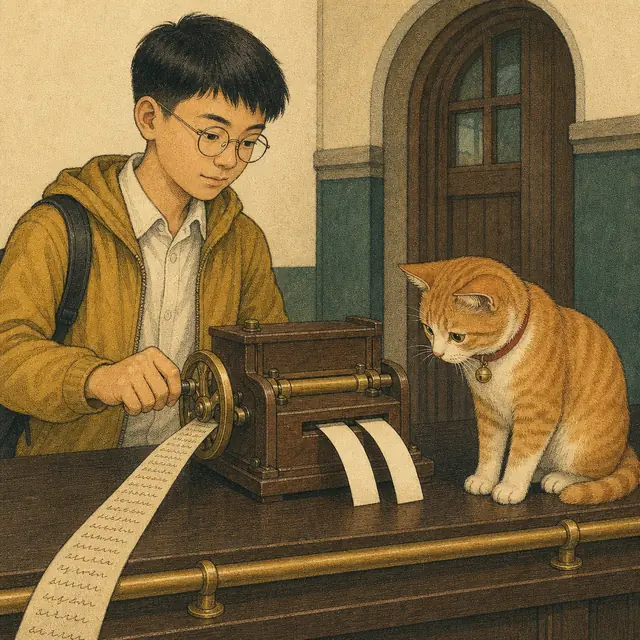
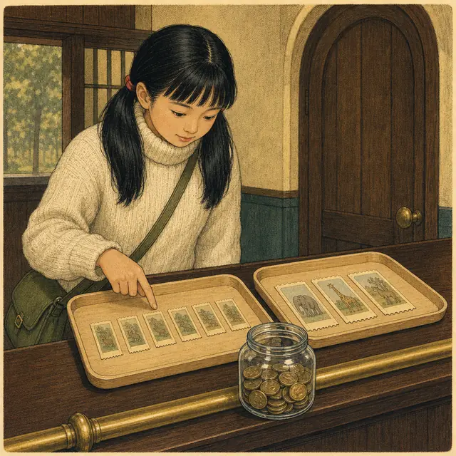
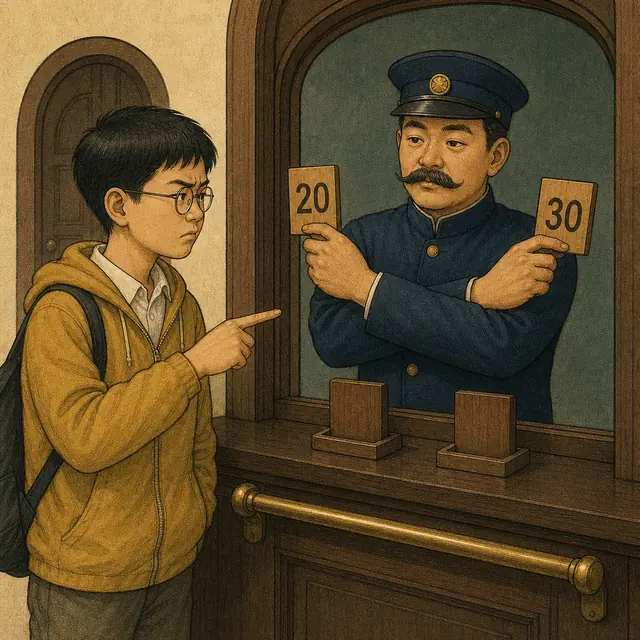
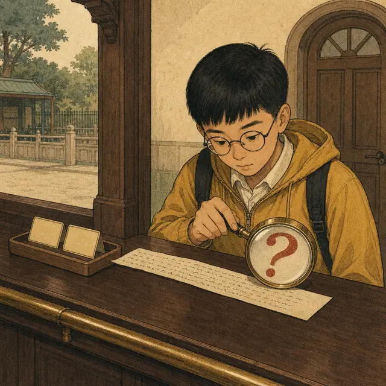

課前暖身漫畫：算出來的答案，是半張票
這次換小妍出題考小翊。她把手寫的題目卡推過櫃檯，小翊照著上一節學的做：兩句話、兩條式子，並排夾好、消去一個未知數，答案很快就出來了。他得意地把結果攤在櫃檯上——一張完整的票，和一張沿虛線撕開、只剩一半的票。售票員看了一眼，雙手交叉比出一個大叉：「票不能買半張。」式子沒列錯，計算也沒錯，可是這個答案在現實裡不存在。這時候正確的回答不是「我算錯了」，而是——此題無解。這一節要學的，就是從中文列出兩條式子，以及算完之後回頭問一句：這個答案說得通嗎？
重點 1：四步驟——把一段中文變成兩條式子
重點整理與敘述
- 用二元一次聯立方程式解應用問題，一律走這四步：
- ① 設未知數：依題意假設兩個適當的未知數。
- ② 列聯立方程式：根據題意列出兩條二元一次方程式。
- ③ 解聯立方程式：用代入消去法或加減消去法（上一節的兩條路）。
- ④ 寫答案：依題意寫出答案；若求出的解不符合情境，即此題無解。
- 為什麼要設兩個未知數：題目裡有兩個不知道的量。只設一個，另一個沒有名字，第二句話就寫不成式子。
- 設未知數要把話講完整：寫「設全票每張 \(x\) 元、優待票每張 \(y\) 元」，不要只寫「設 \(x\) 是全票」——單位和對象都要交代，否則列式時很容易把「幾張」和「幾元」混在一起。
- 一句話列一條式子。題目裡通常剛好有兩句可以寫成等式的話，一句一條，湊成聯立方程式。
- 兩條式子必須來自不同的敘述。同一句話換個說法再寫一次（例如把 \(x+y=8\) 寫成 \(2x+2y=16\)）並沒有多給任何資訊，解不出唯一答案。
- 兩條式子講的是同一組 \(x\)、\(y\)。第①式的 \(x\) 是全票價，第②式的 \(x\) 也必須是全票價。
- 第④步不是抄答案：\(x=70\) 只是一個數，答案要寫成「全票每張 \(70\) 元」這種帶單位的完整句子，而且要回頭確認題目問的就是它（重點 5）、這個數字在現實裡說得通（重點 6）。
| 步驟 | 在做什麼 | 以門票題為例 |
|---|---|---|
| ① 設未知數 | 給兩個未知的量各取一個名字 | 設全票每張 \(x\) 元、優待票每張 \(y\) 元 |
| ② 列聯立方程式 | 一句話列一條式子 | \(4x+3y=430\)、\(2x+5y=390\) |
| ③ 解聯立方程式 | 消去一個未知數 | \(x=70\)、\(y=50\) |
| ④ 寫答案 | 翻回中文、帶單位、查合理性 | 全票 \(70\) 元、優待票 \(50\) 元 |

視覺互動探索：四步驟工作台
選一個情境，再把滑桿從第 \(1\) 步推到第 \(4\) 步，看一段中文怎麼一路變成答案：
形成性評量 (列式四步驟)
Q1. 關於「用二元一次聯立方程式解應用問題」的做法，下列敘述何者錯誤？
解析：答案為 B。同一句話換個寫法沒有多給任何資訊。例如由「共買 \(8\) 件」得到 \(x+y=8\)，再把它乘以 \(2\) 寫成 \(2x+2y=16\)，兩條並列後：
\[\begin{aligned}
& \begin{cases} x+y=8 \\ 2x+2y=16 \end{cases} \\
&\quad \text{②} \div 2 \Rightarrow x+y=8 \\
&\quad \text{兩條其實是同一條}
\end{aligned}\]
消去之後會得到 \(0=0\)，答案列不完——這正是 \(1\text{-}1\) 說過的「一條式子綁不住兩個未知數」。
A 正確：不寫單位很容易把「幾枝」和「幾元」混用。
C 正確：兩條式子講的必須是同一組 \(x\)、\(y\)。
D 正確：那是第④步「寫答案」的一部分。
Q2. 博物館的成人票每張 \(x\) 元、學生票每張 \(y\) 元。小翊買 \(3\) 張成人票和 \(4\) 張學生票，共付 \(620\) 元；小妍買 \(5\) 張成人票和 \(2\) 張學生票，共付 \(660\) 元。依題意列出的二元一次聯立方程式是下列何者？
解析：答案為 D。題目先說成人票每張 \(x\) 元，所以 \(x\) 的係數要放成人票的張數，一句話列一條式子：
\[\begin{aligned}
& \text{小翊：} 3x+4y=620 \\
&\quad \text{小妍：} 5x+2y=660
\end{aligned}\]
A 把兩個總價對調，收據跟金額配錯人。
B 把兩種票的順序整組寫反，等於偷偷把 \(x\) 換成學生票的價錢。
C 把小翊的學生票數 \(4\) 和小妍的成人票數 \(5\) 交換了，兩條式子都不是原本那張收據。
重點 2：數量問題——一條數個數，一條數金額
重點整理與敘述
- 最常見的應用題型：買了兩種東西，知道總共幾個，也知道總共多少錢。兩句話剛好給你兩條式子。
- 兩條式子是兩種不同的「數法」：
- ① 數個數：\(x+y=\) 總數量。
- ② 數金額：（甲單價）\(\times x\ +\) （乙單價）\(\times y = \) 總金額。
- 核心關係是「單價 \(\times\) 數量 \(=\) 金額」。單價是題目給的已知數，會變成係數；數量是未知數。
- 最常見的錯誤：兩條都寫成同一種。把總金額寫進數個數的式子（\(x+y=380\)），或把總數量寫進金額式（\(35x+25y=12\)），列出來的東西跟題目根本不是同一件事。
- 檢查係數的單位：數個數的式子係數是 \(1\)（沒有單位），數金額的式子係數是「元／個」。兩條式子的等號右邊，一邊是「個」、一邊是「元」。
- 有附加項就先整理。「再加購 \(1\) 個 \(2\) 元的袋子，共付 \(902\) 元」要寫成 \(10x+5y+2=902\)，移項化成 \(10x+5y=900\) 再解（\(1\text{-}2\) 重點 7 的動作）。
- 面額問題是同一型：「\(500\) 元和 \(100\) 元的鈔票共 \(70\) 張、合計 \(15000\) 元」，一條數張數、一條數金額。
| 題目的一句話 | 翻成方程式 | 這是哪一種數法 |
|---|---|---|
| 兩種飲料共 \(12\) 杯 | \(x+y=12\) | 數個數 |
| 大杯 \(45\) 元、小杯 \(30\) 元，共付 \(465\) 元 | \(45x+30y=465\) | 數金額 |
| 鈔票共 \(70\) 張 | \(x+y=70\) | 數張數 |
| 面額 \(500\) 與 \(100\)，合計 \(15000\) 元 | \(500x+100y=15000\) | 數金額 |

視覺互動探索：兩條式子配對台
拉滑桿決定實際買了幾件，畫面會給你四條候選式子。挑兩條組成聯立方程式，看哪一種配法算得出正確答案：
形成性評量 (數量問題)
Q3. 便利商店的御飯糰每個 \(35\) 元、飲料每瓶 \(25\) 元。小翊買了御飯糰 \(x\) 個、飲料 \(y\) 瓶，兩種合計 \(12\) 件，共付 \(380\) 元。依題意列出的二元一次聯立方程式是下列何者？
解析：答案為 A。兩句話是兩種數法：
\[\begin{aligned}
& \text{數件數：} x+y=12 \\
&\quad \text{數金額：} 35x+25y=380
\end{aligned}\]
B 把兩個等號右邊對調，變成「共 \(380\) 件、花了 \(12\) 元」。
C 兩條式子的左邊一模一樣、右邊卻不同，同一次購物不可能既是 \(12\) 元又是 \(380\) 元。
D 把單價配錯商品：御飯糰是 \(35\) 元，係數要跟著 \(x\) 走。
Q4. 文具店的筆記本每本 \(45\) 元、鉛筆每枝 \(15\) 元。小妍買筆記本和鉛筆共 \(14\) 件，付了 \(390\) 元。試問她買了幾本筆記本？
解析：答案為 C。設筆記本 \(x\) 本、鉛筆 \(y\) 枝：
\[\begin{aligned}
& ①\ x+y=14 \\
& ②\ 45x+15y=390 \\
&\quad ② \div 15 \Rightarrow 3x+y=26 \cdots ③ \\
&\quad ③ - ① \Rightarrow 2x=12 \\
&\quad x=6,\ y=14-6=8
\end{aligned}\]
筆記本 \(6\) 本、鉛筆 \(8\) 枝，驗算 \(45(6)+15(8)=390\)。
D 是鉛筆的枝數 \(8\)，答錯對象（重點 5 的坑）。
A、B 代回去金額分別是 \(45(4)+15(10)=330\) 與 \(45(5)+15(9)=360\)，都湊不到 \(390\) 元。
重點 3：看錯與弄反——把「錯的情形」也寫成式子
重點整理與敘述
- 這一型的特徵：題目描述了兩種情形——一種是正確的，一種是弄錯的，並告訴你兩者差多少。
- 列式的關鍵：錯的那一種也要寫成式子。把「弄錯之後的結果」和「原本應該的結果」放在等號兩邊，差額補在比較少的那一邊： \[\text{少的} + \text{差額} = \text{多的}\]
- 三種常見的弄錯方式：
- 數量聽反：點 \(4\) 頂帽 \(2\) 件衣，送成 \(2\) 頂 \(4\) 件。
- 價錢貼反：兩種商品的標價互換，賣出的杯數沒變。
- 符號看錯：把加號看成減號，算出另一個答案。
- 符號看錯最單純：「看成減號得 \(19\)、正確答案是 \(45\)」直接就是兩條式子 \(x-y=19\) 與 \(x+y=45\)，不用整理。
- 另外兩種都要先整理。列出來的式子兩邊都有未知數，要移項化成 \(ax+by=c\)（\(1\text{-}2\) 重點 7），同類項還會抵消掉一部分： \[\begin{aligned} & 2x+4y=4x+2y+80 \\ &\quad {}-2x+2y=80 \\ &\quad y-x=40 \end{aligned}\]
- 「多花」和「少花」差在加號放哪邊，這是最容易錯的一步。寫完之後用常識檢查：若送來的比較貴，那一邊就該比較大。
- 第一條式子通常很單純（總數或總價），難的永遠是第二條。
| 題目的說法 | 先寫成 | 整理後 |
|---|---|---|
| 送來的比點的多花 \(80\) 元 | \(2x+4y=4x+2y+80\) | \(y-x=40\) |
| 貼反價錢後收入多 \(200\) 元 | \(25x+35y=35x+25y+200\) | \(y-x=20\) |
| 把 \(+\) 看成 \(-\)，得 \(19\) | \(x-y=19\) | \(x-y=19\) |
| 正確答案是 \(45\) | \(x+y=45\) | \(x+y=45\) |

視覺互動探索：弄錯了幾元對照台
選一種弄錯的方式，拉滑桿改變差額，看第二條式子怎麼從「兩邊都有未知數」被整理成標準式：
形成性評量 (看錯與弄反)
Q5. 園遊會攤位賣熱狗（每份 \(45\) 元）與飲料（每杯 \(30\) 元），設熱狗賣出 \(x\) 份、飲料賣出 \(y\) 杯，兩種共賣出 \(70\) 件。結算時發現有人把兩種價錢貼反了，導致收入比原本少了 \(150\) 元。下列哪一組是依題意列出的聯立方程式？
解析：答案為 D。貼反之後熱狗被收 \(30\) 元、飲料被收 \(45\) 元，實收是 \(30x+45y\)；原本應收 \(45x+30y\)。「少了 \(150\) 元」表示實收比較少，差額要補在實收那一邊：
\[\begin{aligned}
& 30x+45y+150=45x+30y \\
&\quad 15y-15x=150 \\
&\quad y-x=10
\end{aligned}\]
配上 \(x+y=70\) 解得 \(x=30\)、\(y=40\)。
A、B 都把 \(150\) 加在原本應收那一邊，等於說貼反之後收得比較多，與題意相反。
C 除了加錯邊，還把「共 \(70\) 件」與「少 \(150\) 元」兩個數字對調了。
Q6. 小翊做兩個整數的加法，不小心把加號看成減號，算得的答案是 \(24\)；已知正確答案應該是 \(58\)。試問這兩個整數中較小的那個是多少？
解析：答案為 A。設兩個整數為 \(x\)、\(y\)。看成減號得到 \(24\)，正確的加法得到 \(58\)：
\[\begin{aligned}
& ①\ x-y=24 \\
& ②\ x+y=58 \\
&\quad ①+② \Rightarrow 2x=82,\ x=41 \\
&\quad y=58-41=17
\end{aligned}\]
兩數是 \(41\) 與 \(17\)，較小的是 \(17\)。
D 是較大的那個數，答錯對象。
B 是題目給的錯誤答案 \(24\) 本身。
C 是誤用 \(58-24=34\) 直接當答案，少除以 \(2\) 那一步。
重點 4：分組分裝——「剩下」用減，「不足」用加
重點整理與敘述
- 這一型的特徵：同一批東西用兩種分法各分一次，一次會剩下、一次會不足。兩種分法各給一條式子。
- 基本關係：\(\text{每組個數} \times \text{組數} = \text{分掉的總數}\)。設總數 \(x\)、組數 \(y\)：
- 剩下 \(r\) 個（分不完）：分掉的比總數少 \(r\) 個 → \(x-r=k\,y\)。
- 不足 \(s\) 個（不夠分）：要湊滿還得再加 \(s\) 個 → \(x+s=k\,y\)。
- 加減方向記反就全錯。用一句話記：東西多出來就把它扣掉，東西不夠就把它補上，扣完補完剛好等於「整整齊齊裝滿」的數量。
- 「多出一組」是組數變少，不是總數變少。「\(8\) 人一間會多出一間房」表示實際只用了 \(y-1\) 間，寫成 \(x=8(y-1)\)。
- 「每 \(k\) 人分一個」要寫成分數：男生 \(x\) 人每 \(4\) 人分一個披薩，用掉 \(\dfrac{x}{4}\) 個。列完之後兩邊同乘分母的最小公倍數去分母（\(1\text{-}2\) 重點 8）： \[\begin{aligned} & \frac{x}{4}+\frac{y}{6}=7 \\ &\quad \times 12 \Rightarrow 3x+2y=84 \end{aligned}\]
- 兩式相減時 \(x\) 會自己消失，因為兩條式子的 \(x\) 係數都是 \(1\)，剩下的就是組數 \(y\)。這一型幾乎都用加減消去法最快。
| 題目的說法 | 翻成方程式 |
|---|---|
| 每盒裝 \(8\) 個，剩下 \(7\) 個沒盒子裝 | \(x-7=8y\) |
| 每盒裝 \(10\) 個，不足 \(3\) 個 | \(x+3=10y\) |
| \(7\) 人一間，有 \(6\) 人沒房間 | \(x-6=7y\) |
| \(8\) 人一間，多出一間房 | \(x=8(y-1)\) |
| 男生每 \(4\) 人分一個披薩 | \(\dfrac{x}{4}\) 個 |
視覺互動探索：裝盒機
拉滑桿決定一種裝法，畫面會把兩句話畫出來並列出兩條式子。注意「剩下」是減、「不足」是加：
形成性評量 (分組分裝)
Q7. 烘焙坊把一批餅乾裝進袋子。若每袋裝 \(6\) 片，會剩下 \(5\) 片沒袋子裝；若每袋裝 \(7\) 片，則會不足 \(3\) 片。試問這批餅乾共有多少片？
解析：答案為 C。設餅乾共 \(x\) 片、袋子共 \(y\) 個。剩下要減、不足要加：
\[\begin{aligned}
& ①\ x-5=6y \\
& ②\ x+3=7y \\
&\quad ②-① \Rightarrow 8=y \\
&\quad x=6(8)+5=53
\end{aligned}\]
驗算：\(6 \times 8=48\)，\(53-48=5\) 剩下 ✓；\(7 \times 8=56\)，\(56-53=3\) 不足 ✓。
A 是袋子的個數 \(8\)，答錯對象。
B 是把「不足 \(3\)」也當成「剩下」，列成 \(x-5=6y\)、\(x-3=7y\)，相減得 \(y=2\)、\(x=17\)——加減方向記反就整題垮掉。
D 是 \(y=8\) 算對了，代回時把 \(x-5=6y\) 解成 \(x=6y-5=43\)，移項少變一次號。
Q8. 社團共有 \(42\) 位成員一起吃蛋糕。男生每 \(5\) 人分食一個、女生每 \(4\) 人分食一個，恰好分完，共買了 \(9\) 個蛋糕。試問男生有多少人？
解析：答案為 B。設男生 \(x\) 人、女生 \(y\) 人。男生用掉 \(\dfrac{x}{5}\) 個蛋糕、女生用掉 \(\dfrac{y}{4}\) 個：
\[\begin{aligned}
& ①\ x+y=42 \\
& ②\ \dfrac{x}{5}+\dfrac{y}{4}=9 \\
&\quad ②\times 20:\ 4x+5y=180 \\
&\quad ①\times 4:\ 4x+4y=168 \\
&\quad \text{兩式相減：} y=12 \\
&\quad x=42-12=30
\end{aligned}\]
驗算：\(30 \div 5=6\) 個、\(12 \div 4=3\) 個，合計 \(9\) 個 ✓。
A 是女生的人數 \(12\)，答錯對象。
C、D 代回去分別得 \(\frac{18}{5}\) 與 \(\frac{24}{5}\)，連「恰好分完」都做不到。
重點 5：題目問的，不一定是你解出來的那個數
重點整理與敘述
- 解完不等於答完。\(x=18\)、\(y=13\) 只是兩個數，題目最後那句問句才決定要交出什麼。
- 回頭讀題目的最後一句。應用題的問句幾乎都在最後，而且常常問的是 \(x\)、\(y\) 的某種組合：
- 「兩種各有幾個」→ 交出 \(x\) 和 \(y\)。
- 「全班共有幾人」→ 交出 \(x+y\)。
- 「甲比乙多幾個」→ 交出 \(x-y\)。
- 「這次總共收入多少元」→ 交出（單價）\(\times x\ +\)（單價）\(\times y\)。
- 選擇題的誘答就藏在這裡。問「較小的那個數」，選項一定會放較大的那個；問「女生幾人」，選項一定會放男生的人數。
- 設的量和問的量不一定相同。有時候設「每盒幾個」比較好列式，題目問的卻是「一共幾盒」——設什麼由好不好列式決定，跟題目問什麼是兩件事。
- 把答案寫成完整句子並帶單位：「全班共有 \(31\) 位同學」而不是只寫「\(31\)」。寫完之後那句話唸起來如果怪怪的，通常就是答錯對象了。
- 兩個常用的檢查動作：把解代回原本的兩條式子（不是整理過的），再把答案唸一次對照題目的問句。
| 已解出 | 題目問句 | 要交出的答案 |
|---|---|---|
| 男 \(18\)、女 \(13\) | 男生有幾人 | \(18\) 人 |
| 男 \(18\)、女 \(13\) | 全班共有幾人 | \(18+13=31\) 人 |
| 男 \(18\)、女 \(13\) | 男生比女生多幾人 | \(18-13=5\) 人 |
| 大杯 \(18\)、小杯 \(27\) | 總收入多少元（\(60\)／\(45\) 元） | \(60(18)+45(27)=2295\) 元 |

視覺互動探索：回頭讀題機
兩支滑桿是已經解出來的 \(x\)、\(y\)。換一個問句看看——同一組解，答案完全不同：
形成性評量 (回頭讀題)
Q9. 某班男生比女生多 \(3\) 人。某日有 \(2\) 位女生請公假，此時班上男生人數是女生的 \(2\) 倍少 \(1\) 人。試問全班共有多少位同學？
解析：答案為 A。設男生 \(x\) 人、女生 \(y\) 人。請假後女生剩 \(y-2\) 人：
\[\begin{aligned}
& ①\ x=y+3 \\
& ②\ x=2(y-2)-1 \\
&\quad ② \Rightarrow x=2y-5 \\
&\quad y+3=2y-5,\ y=8 \\
&\quad x=8+3=11
\end{aligned}\]
男 \(11\) 人、女 \(8\) 人，題目問的是全班：\(11+8=19\) 人。
B 是男生人數、C 是女生人數，兩個都解對了卻沒回頭讀最後那句問句。
D 是把請假的 \(2\) 人也扣掉的 \(19-2=17\)，但那 \(2\) 位同學只是請假，仍然是班上的人。
Q10. 小妍買了每張 \(8\) 元和每張 \(12\) 元的郵票，兩種共 \(30\) 張，一共付了 \(316\) 元。試問 \(12\) 元的郵票比 \(8\) 元的多幾張？
解析：答案為 D。設 \(8\) 元的 \(x\) 張、\(12\) 元的 \(y\) 張：
\[\begin{aligned}
& ①\ x+y=30 \\
& ②\ 8x+12y=316 \\
&\quad ② \div 4 \Rightarrow 2x+3y=79 \cdots ③ \\
&\quad ③-①\times 2 \Rightarrow y=19 \\
&\quad x=30-19=11
\end{aligned}\]
題目問的是相差幾張：\(19-11=8\) 張。
A 是 \(8\) 元郵票的張數、B 是 \(12\) 元郵票的張數，兩個都是中途的解不是答案。
C 是題目給的總張數 \(30\)，跟問句無關。
重點 6：解得出來，不代表題目有解
重點整理與敘述
- 最後一道關卡：確定列式與計算都沒錯之後，還要問一句——這個解在題目的情境裡存在嗎？若不存在或違反常理，則此題無解。
- 「此題無解」不是「我算錯了」。式子解得出來，只是那組數字在現實中不成立；正確的回答就是寫出「此題無解」，並說明哪裡不合理。
- 常見的不合理，大致三類：
- 該是正數卻算出負數：年齡、人數、張數、長度不可能是負的。
- 該是整數卻算出小數：人數 \(19.5\) 人、球賽得分 \(9.5\) 分、票 \(2.5\) 張。
- 超出可能的範圍：月分只有 \(1\) 到 \(12\)、日期最多 \(31\)、一週只有 \(7\) 天。
- 不是所有量都要求整數。長度 \(3.5\) 公尺、重量 \(2.4\) 公斤、金額 \(19.5\) 元都很正常；「一個一個數得出來」的東西才必須是整數。判斷標準是那個量的性質，不是它看起來整不整齊。
- 還要檢查題目沒明說的條件。「\(3\) 年前姐姐的年齡」隱含那時她已經出生，所以 \(3\) 年前的歲數也不能是負的——不只檢查今年的答案，題目提到的每個時間點都要成立。
- 檢查的時機是第④步「寫答案」，不是解完就算了。把兩件事一起做完：確認題目問的是哪個量（重點 5），再確認那個答案說得通。
| 算出來的解 | 哪裡不合理 | 該怎麼回答 |
|---|---|---|
| 弟弟今年 \(-2\) 歲 | 年齡不能是負數 | 此題無解 |
| 生日是 \(13\) 月 \(18\) 日 | 月分沒有 \(13\) 月 | 此題無解 |
| 甲隊得 \(9.5\) 分 | 棒球得分沒有小數 | 此題無解 |
| 男生 \(19.5\) 人 | 人數必須是正整數 | 此題無解 |
| 繩子長 \(3.5\) 公尺 | 長度本來就可以有小數 | 合理，照常作答 |
視覺互動探索：合理性檢查關
選一個情境，拉滑桿改變題目給的數字。式子每次都解得出來，但解得出來不一定過得了關：
形成性評量 (合理性與無解)
Q11. 小妍說她看的那場籃球賽「甲隊比乙隊多得 \(7\) 分，兩隊合計得 \(96\) 分」。若小妍的計算過程沒有錯，下列敘述何者正確？
解析：答案為 C。設甲隊得 \(x\) 分、乙隊得 \(y\) 分：
\[\begin{aligned}
& ①\ x-y=7 \\
& ②\ x+y=96 \\
&\quad ①+② \Rightarrow 2x=103 \\
&\quad x=51.5,\ y=44.5
\end{aligned}\]
式子解得出來，但籃球得分不會有小數，與事實不符，所以小妍記錯了，此題無解。
D 雖然是算出來的數值，卻不是這題該給的答案——不合情境時要回答「無解」，不是照抄小數。
A 的兩隊得分差是 \(8\)、B 的差是 \(6\)，兩個都湊得出 \(96\) 分，卻擅自改掉了題目說的「多 \(7\) 分」。
Q12. 姐姐今年 \(x\) 歲、妹妹今年 \(y\) 歲。已知 \(5\) 年後姐姐的年齡是妹妹的 \(4\) 倍，且 \(3\) 年前姐姐年齡的 \(2\) 倍比妹妹年齡的 \(3\) 倍多 \(28\) 歲。下列敘述何者正確？
解析：答案為 B。\(5\) 年後兩人各加 \(5\) 歲、\(3\) 年前各減 \(3\) 歲：
\[\begin{aligned}
& \begin{cases} x+5=4(y+5) \\ 2(x-3)=3(y-3)+28 \end{cases} \\
&\quad \text{化簡：} ①\ x-4y=15 \\
&\qquad\quad\ \ ②\ 2x-3y=25 \\
&\quad ②-①\times 2 \Rightarrow 5y=-5 \\
&\quad y=-1,\ x=15+4(-1)=11
\end{aligned}\]
解確實求得出來，但妹妹今年 \(-1\) 歲不可能，與事實不符，所以此題無解。
D 錯在「無法求解」：聯立方程式本身有唯一解 \(x=11\)、\(y=-1\)，問題出在這組解不合情境，兩者不一樣。
C 是 \(5\) 年後妹妹的年齡 \(y+5=4\)，不是今年的歲數。
A 是把 \(y=-1\) 的負號漏掉直接寫成 \(1\)，代回 \(x-4y=15\) 會得到 \(x=19\)，並不滿足第②式。
小節總結與核心回顧
應用問題解題手冊
- 四步驟：設未知數 → 列聯立方程式 → 解 → 寫答案。四步都要做完，少了最後一步很容易白算。
- 設未知數要完整：對象與單位都寫出來（「設全票每張 \(x\) 元」），不要只寫「設 \(x\) 是全票」。
- 一句話列一條式子，兩條必須來自不同的敘述；同一句換個寫法等於沒有多給資訊。
- 數量問題：一條數個數（\(x+y=\) 總數）、一條數金額（單價 \(\times\) 數量的和）。兩條的等號右邊一邊是「個」、一邊是「元」。
- 看錯與弄反：把錯的情形也寫成式子，差額補在比較少的那一邊，再移項化成標準式。「符號看錯」型不用整理，兩句話直接就是兩條式子。
- 分組分裝：剩下用減、不足用加，扣完補完剛好等於「整整齊齊裝滿」。「多出一組」是組數少一，寫成 \(k(y-1)\)。
- 「每 \(k\) 人分一個」寫成 \(\dfrac{x}{k}\)，列完兩邊同乘最小公倍數去分母。
- 回頭讀最後那句問句：問的常常是 \(x+y\)、\(x-y\) 或總金額，不是 \(x\) 或 \(y\) 本身。選擇題的誘答就藏在這裡。
- 檢查合理性：該是正數、該是整數、該在範圍內。不合理時的答案是「此題無解」，不是把小數硬寫上去。
- 不是每個量都要求整數：長度、重量、金額可以有小數；「一個一個數得出來」的東西才不行。
回到售票口：這一次，題目只給一段話
難的是翻譯，不是計算
前兩節的題目都直接把 \(\begin{cases} 5x+2y=360 \\ 3x+y=210 \end{cases}\) 端到你面前，你只要消去一個未知數。這一節把那張紙抽走了，換成一段中文：「我們家買了 \(5\) 張全票、\(2\) 張優待票，共 \(360\) 元。」
整節在練的就是這個翻譯動作。而翻譯有一套固定手續：先給兩個未知的量各取一個名字（設未知數），再一句話換一條式子（列聯立方程式）。第三步的解法上一節已經練熟了，這一節反而不是重點。
三種常見的句型
數量問題最直接：一句數個數、一句數金額。看錯與弄反要多一個動作——把「弄錯的那一種情形」也老老實實寫成式子，再讓差額補在少的那一邊。分組分裝則是加減方向的考驗：東西多出來就扣掉，東西不夠就補上。
這三種句型幾乎涵蓋了整章的應用題。遇到沒看過的情境不必慌，回頭問同一個問題就好：題目裡哪兩句話可以寫成等號？
最後兩關，都在「寫答案」那一步
算出 \(x\)、\(y\) 之後還沒結束。第一關是回頭讀題：問句要的常常是 \(x+y\) 或 \(x-y\)，不是你手上那兩個數。第二關是合理性：\(-1\) 歲的妹妹、\(13\) 月的生日、\(9.5\) 分的球賽，式子都解得出來，現實裡卻不存在——這時候的答案是「此題無解」，而不是把數字硬抄上去。
這也是應用問題和純計算題最大的差別：計算題只有對和錯，應用問題還有「說不說得通」。第 \(1\) 章到這裡就結束了。下一章要問一個新問題：這些方程式如果畫在紙上，會長成什麼樣子？答案是——每一條二元一次方程式都是一條直線，而聯立方程式的那組共同解，就是兩條直線交叉的那一點。